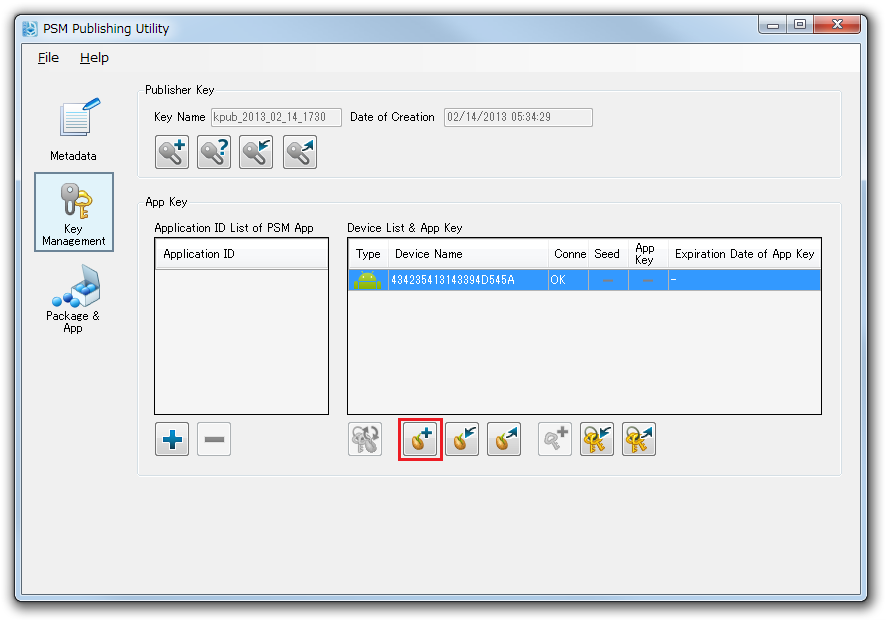
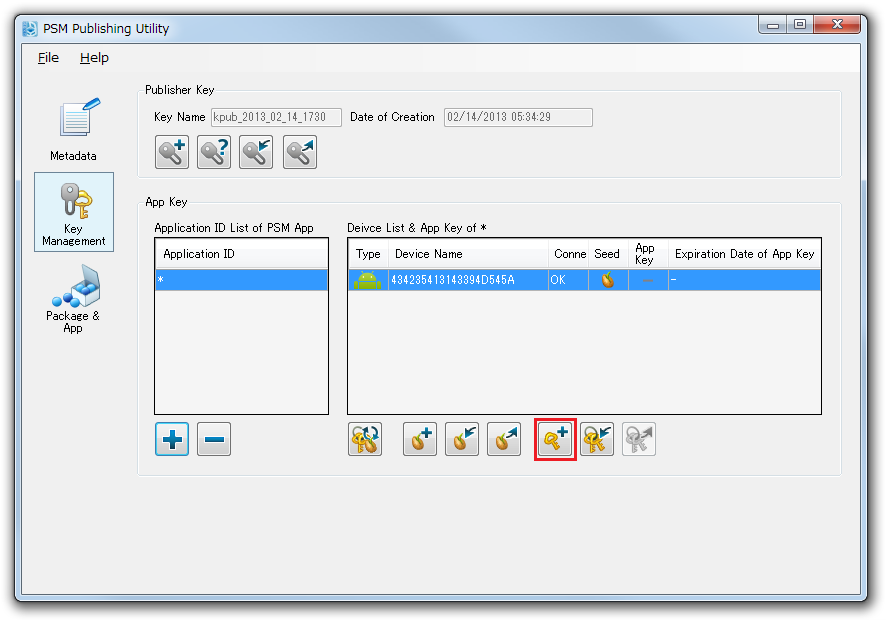
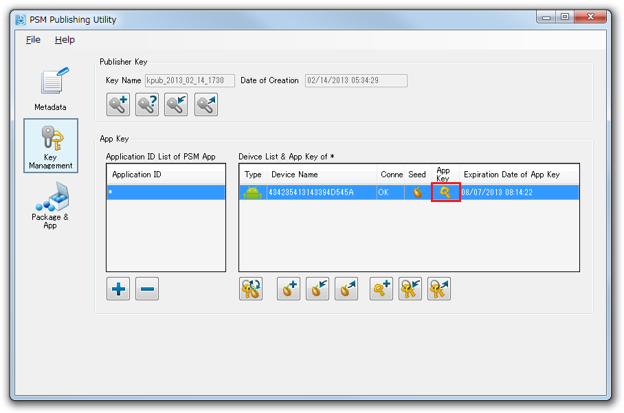
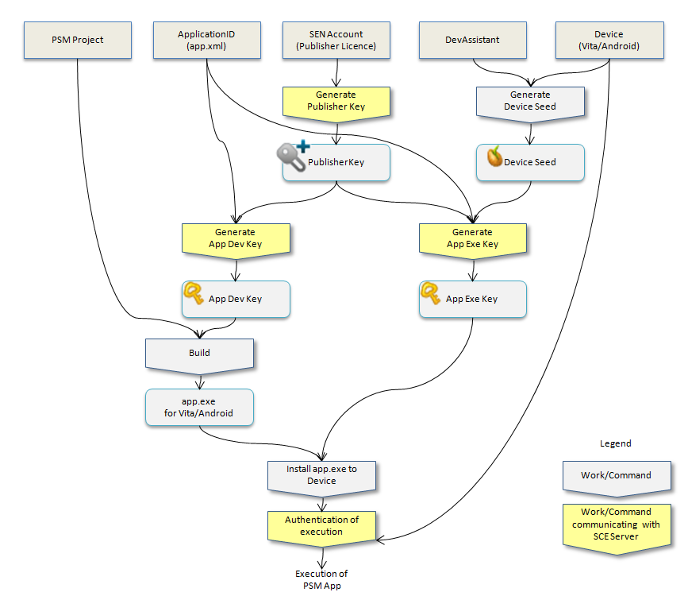
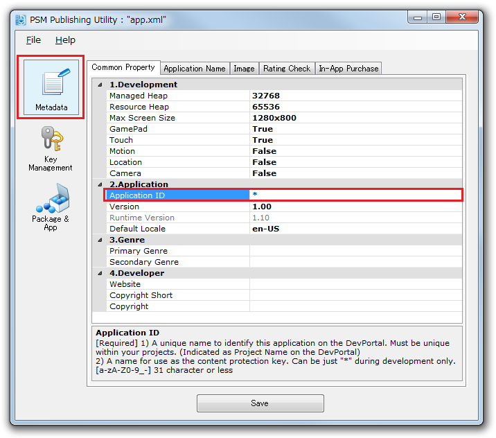

This document provides an explanation on how to create the keys required for executing a PSM application on an actual device and an explanation on the dependent relationship of keys.
Contents
A "key" in this document refers to a Publisher Key, Device Seed, and/or App Key.
To execute a PSM application on an actual device, create keys with the following procedure.
- Create a Publisher Key.
- Create a Device Seed from the actual device on which to execute.
- Register the Application ID of the PSM application to execute, and create an App Key based on the Publisher Key and Device Seed.
Note: Key creation requires a Sony Entertainment Network (formerly PlayStation(R)Network) account and a publisher license. Obtain a publisher license from the SCE DevPortal site.
https://psm.playstation.net
Create keys as follows.
Note: Keys created with this procedure are the same as those automatically created from the PSM Studio menu's [Key] - [Update Device Seed and App Key].

Figure 1 Procedure for Creating Keys
A Publisher Key is a key that is allocated to a person with a publisher license.
Create the Publisher Key as follows.
- Double-click the [Publishing Utility] icon on the Desktop and start the Publishing Utility.

Figure 2 Publishing Utility
- Connect your PC to the Internet to enable communicate with the SCE server for creating the Publisher Key. When using a proxy server with a company intranet environment, etc., select [Menu] - [File] - [Proxy Server Settings] and make connection settings.
- Select [Key Management] panel of the Publishing Utility and click the [Generate Publisher Key] button.

Figure 3 [Generate Publisher Key] Button
- Follow the instructions displayed in the dialog to make your input.
- When the Publisher Key is successfully created, the data of the Publisher Key will be displayed in the Key Name and Date of Creation fields.
The Device Seed refers to the data used to create the App Key. The Device Seed is a value that is unique to each device which can be obtained from the device itself.
Create the Device Seed as follows.
- Connect your PC to the applicable device using a USB cable. Once connected, the device will be displayed on the [Device List & App Key] list.
- For PS Vita, have Dev Assistant running on PS Vita.
- Select the target device and click the [Generate Device Seed] button; the creation of the Device Seed will start.
Figure 4. Device Seed Creation
- When the Device Seed is successfully created, the applicable icon indicating the type of device will be displayed in [Seed].
Note: To delete the Device Seed, select the Device Seed and select [Right click] - [Delete Device Seed].
An App Key is a key used to execute a PSM application on an actual device.
- An App Key must be created per Application ID per device.
- An App Key is created based on the Publisher Key, Device Seed, and the PSM application's Application ID.
- There are two types of App Keys, "application development key" and "application execution key". When an App Key is created, these two types will be automatically created.
- The application development key is used upon building the program.
- The application execution key is transferred to the actual device and used when executing the PSM application.
Create the App Key as follows.
- First, register the Application ID of the PSM application to execute on the actual device. Click on the [+] button of the key management panel.

Figure 5. Application ID Registration
- On the displayed dialog, click the [...] button and select app.xml of the PSM project. Press the [OK] button to register the Application ID within app.xml to the list box.

Figure 6 Application ID

Figure 7 Opening app.xml in the Project
- Select the Application ID and device displayed within the list box and click the [Generate App Key] button.
Figure 8 [Generate App Key] Button
- Follow the instructions displayed in the dialog to make your input.
- When the App Key is successfully created, the key will be displayed under [App Key].
Figure 9. App Key
- After App Key creation, rebuild the solution. From hereon, the PSM application for which an App Key has been created will become executable on the device.
Note: To delete the App Key, select the App Key and select [Right click] - [Delete App Key].
Key dependency relationships are indicated in the figure below. When a parent's element is updated, the dependent child's element must also be updated.
Figure 10. Key Dependency Relationships
- A different Publisher Key, App Key, and device key will be created every time.
- When the version of DevAssistant to be installed on the actual device is updated, the device and App Key must be created again.
Example:
- The Publisher Key was recreated. -> Delete the App Key and recreate the App Key.
- The Device Seed was recreated. -> Delete the App Key and recreate the App Key.
- The Android OS was updated. -> Delete the Device Seed and App Key and recreate them.
By specifying an asterisk "*" to the Application ID, an App Key that can be used on multiple projects can be created.
The time and effort to create an App Key per PSM application can be saved by creating an asterisk App Key.
Note: "*" cannot be used for creating a master package.
Note: When a new solution is created, the Application ID will be set with "*" by default.
Specify the asterisk as follows.
- Start the Publishing Utility and select the MetaData tab.
- Open an arbitrary app.xml file from [Menu] - [File] - [Load].
- Enter the [*] character to [Application ID] and save.
Figure 11. Asterisk Specification
- Select [Key Management] tab and click the [+] button.
Figure 12. Application ID Registration Button
- Select the app.xml by which the asterisk was specified above.
- Select the Application ID and device displayed within the list box and click the [Update Device See & App Key] button.
- When the App Key is successfully created, the icon of the App Key will be displayed under [App Key]. Subsequently, for a project with [*] attached to the Application ID, the application can be executed on that actual device without having to create an App Key.

Figure 13 Created App Key
A PSM application can be executed on up to 100 actual devices per Sony Entertainment Network account.
When executed on a PS Vita, usage is limited to two devices per Sony Entertainment Network account.
Notes: http://manuals.playstation.net/document/jp/psvita/psn/aboutactivate.html
When executing on a PC simulator, the publisher license and key are not required.
- The creation of the Publisher Key is only required once. The Publisher Key can be continually used even when the SDK version is updated.
- There is no expiration data for the Publisher Key.
- A Publisher Key will be registered on SCE servers when created.
- Only the most recently created Publisher Key will be valid for a single Sony Entertainment Network account.
- When a team shares a Sony Entertainment Network account and Publisher Key, be careful not to overwrite the Publisher Key.
- Example:
- Development team member A creates Publisher Key A_pub_key with SEN account P_team.
- Afterward, development team member B creates Publisher Key B_pub_key with the same account. At this time, B_pub_key will become valid, and the overwritten A_pub_key will become invalid. In addition, App Keys created with Publisher Key A_pub_key will also become invalid at this time.
In such cases, development team member B should export Publisher Key B_pub_key and give it to development team member A.
- The validity of a Publisher Key retained by a developer can be checked with the [Check Publisher Key] command.
- In PSM Studio, execute it with - [Menu] - [Key] - [Check Publisher Key].
- In Publishing Utility, execute it with - [Key Management] panel - [Check Publisher Key].
- When installing a new version of DevAssistant, previously created Device Seeds will become invalid. After deleting the Device Seed, create a new Device Seed.
- When updating the OS of an Android device, earlier Device Seeds will become invalid. After deleting the Device Seed, create a new Device Seed.
- The App Key will become unusable when the SDK is reinstalled. Upon reinstalling the SDK, a dialog will be displayed to delete the key; select [Yes] to delete and recreate the App Key.
- The expiration data for an App Key is 3 months after its creation date.
If a key is shared among multiple people, make sure to reference Key Management in Team Development.